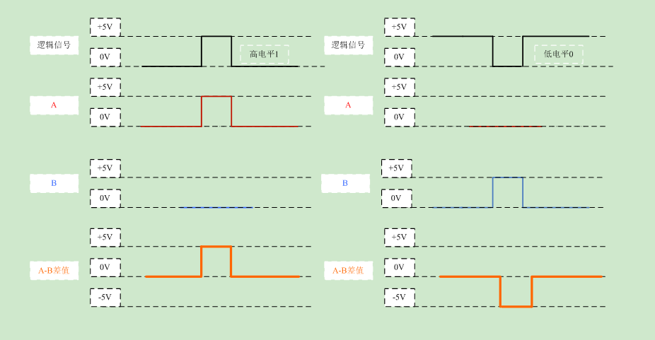
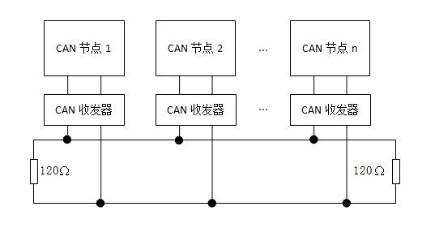
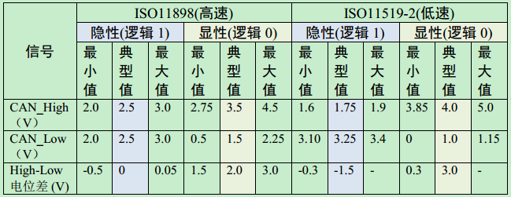

TTL、RS-232、RS422、RS-485 是指的电平标准（电信号），很多人把 RS-232、RS-422、RS-485 误称为通讯协议，这是很不应该的，其实它们仅是关于 UART 通讯的一个机械和电气接口标准（顶多是网络协议中的物理层面）；也就是说对 MCU 等控制器编写了 UART 程序，串行数据会通过硬件电路在设备间进行收发，这个硬件电路要遵循一个电平标准，实现设备间的交互。
# 前言
要了解逻辑电平的内容，首先要知道以下几个概念的含义：
- 输入高电平（VIH）：保证逻辑门的输入为高电平时所允许的最小输入高电平，当输入电平高于 VIH 时，则认为输入电平为高电平。
- 输入低电平（VIL）：保证逻辑门的输入为低电平时所允许的最大输入低电平，当输入电平低于 VIL 时，则认为输入电平为低电平。
- 输出高电平（VOH）：保证逻辑门的输出为高电平时的输出电平的最小值，逻辑门的输出为高电平时的电平值都必须大于此 VOH。
- 输出低电平（VOL）：保证逻辑门的输出为低电平时的输出电平的最大值，逻辑门的输出为低电平时的电平值都必须小于此 VOL。
- 阈值电平（VT）：数字电路芯片都存在一个阈值电平，就是电路刚刚勉强能翻转动作时的电平。它是一个界于 VIL、VIH 之间的电压值，对于 CMOS 电路的阈值电平，基本上是二分之一的电源电压值，但要保证稳定的输出，则必须要求输入高电平 > VIH，输入低电平 <VIL。 对于一般的逻辑电平，VIH，VIL，VOH，VOL 以及 VT 的关系可表示如下： VOH> VIH > VT > VIL > VOL。
- IOH：逻辑门输出为高电平时的负载电流（为拉电流）。
- IOL：逻辑门输出为低电平时的负载电流（为灌电流）。
- IIL：逻辑门输入为高电平时的电流（为灌电流）。
- IIL：逻辑门输入为低电平时的电流（为拉电流）。
/------------------------------------------ 我是分割线 ------------------------------------------/
串口：串口是一个泛称，UART、TTL、RS232、RS485 都遵循类似的通信时序协议，因此都被通称为串口。
UART 接口：通用异步收发器（Universal Asynchronous Receiver/Transmitter)，UART 是串口收发的逻辑电路，这部分可以独立成芯片，也可以作为模块嵌入到其他芯片里，单片机、SOC、PC 里都会有 UART 模块。
COM 口：特指台式计算机或一些电子设备上的 D-SUB 外形（一种连接器结构，VGA 接口的连接器也是 D-SUB）的串行通信口，应用了串口通信时序和 RS232 的逻辑电平。
USB 口：通用串行总线，和串口完全是两个概念。虽然也是串行方式通信，但由于 USB 的通信时序和信号电平都和串口完全不同，因此和串口没有任何关系。USB 是高速的通信接口，用于 PC 连接各种外设，U 盘、键鼠、移动硬盘、当然也包括 “USB 转串口” 的模块。（USB 转串口模块，就是 USB 接口的 UART 模块）
# TTL 电平标准
1、TTL
TTL：Transistor-Transistor Logic 三极管结构。TTL 电平规定，+5V 等价于逻辑 '1'，0V 等价于逻辑 '0'。这样的数据通信及电平规定方式，被称做 TTL（晶体管 - 晶体管逻辑电平）信号系统。
Vcc：5V；VOH >= 2.4V；VOL <= 0.5V；VIH >= 2V；VIL <= 0.8V。
2、LVTTL
LVTTL：Low Voltage TTL。
3.3V LVTTL：Vcc：3.3V；VOH >= 2.4V；VOL <= 0.4V；VIH >= 2V；VIL <= 0.8V。
2.5V LVTTL：Vcc：2.5V；VOH >= 2.0V；VOL <= 0.2V；VIH >= 1.7V；VIL <= 0.7V。
3、注意事项
TTL 电平一般过冲都会比较严重，可以在始端串 22 欧或 33 欧电阻； TTL 电平输入脚悬空时是内部认为是高电平。要下拉的话应用 1k 以下电阻下拉。TTL 输出不能驱动 CMOS 输入。
4、‘0’ 和 ‘1’ 表示

# RS-232 电平标准
1、RS-232
RS-232：是美国电子工业协会 EIA（Electronic Industry Association）制定的一种串行物理接口标准。RS 是英文 “推荐标准” 的缩写，232 为标识号。RS-232 是对电气特性以及物理特性的规定，只作用于数据的传输通路上，它并不内含对数据的处理方式。
RS-232 标准是逻辑 '1' 为 -3V～-15V，逻辑 '0' 为 +3～+15V。
2、拓扑结构

3、‘0’ 和 ‘1’ 表示

# RS-485 电平标准
1、RS-485
RS-485：RS-232 接口可以实现点对点的通信方式，但这种方式不能实现联网功能。于是，为了解决这个问题，一个新的标准 RS-485 产生了。RS-485 的数据信号采用差分传输方式，也称作平衡传输，它使用一对双绞线，将其中一线定义为 A，另一线定义为 B。
通常情况下，驱动器 AB 端口之间的正电平在 +2～+6V 标识为逻辑 '1'，负电平在 -2～-6V 标识为逻辑 '0'（这里的电平指 AB 两线间的电压差）。
note：AB 两端的电压差最小为 0.2V 以上时有效，任何不大于 12V 或者不小于－7V 的差值对接受端都被认为是正确的。
2、拓扑结构

3、‘0’和‘1’表示

# RS-422 电平标准
RS-422 的电气性能与 RS-485 完全一样。主要的区别在于：RS-422 有 4 根信号线：两根发送、两根接收。由于 RS-422 的收与发是分开的所以可以同时收和发（全双工），也正因为全双工要求收发要有单独的信道，所以 RS-422 适用于两个站之间通信，星型网、环网，不可用于总线网；RS-485 只有 2 根信号线，所以只能工作在半双工模式，常用于总线网。
# RS-232、RS-422 与 RS-485 比较
RS-232 在 1962 年发布，命名为 EIA-232-E，作为工业标准，以保证不同 厂家产品之间的兼容。
RS-422 由 RS-232 发展而来，它是为弥补 RS-232 之不足而提出的。 为改进 RS-232 通信距离短、速率低的缺点，RS-422 定义了一种平衡通信接口，将传输速率提高到 10Mb/s，传输距离延长到 4000 英尺（速率低于 100kb/s 时），并允许在一条平衡总线上连接最多 10 个接收器。RS-422 是一种单机发送、多机接收的单向、平衡传输规范，被命名为 TIA/EIA-422-A 标准。
为扩展应用范围，EIA 又于 1983 年在 RS-422 基础上制定了 RS-485 标准，增加了多点、双向通信能力，即允许多个发送器连接到同一条总线上， 同时增加了发送器的驱动能力和冲突保护特性，扩展了总线共模范围，后命名为 TIA/EIA-485-A 标准。由于 EIA 提出的建议标准都是以 “RS” 作为前缀，所以在通讯工业领域，仍然习惯将上述标准以 RS 作前缀称谓。
| RS-232 | RS-422 | RS-485 | |
|---|---|---|---|
| Cable | Single ended | Single ended multi-drop | Multi-drop |
| Number of Devices | 1 transmitter 1 receiver | 1 transmitter 10 receivers | 32 transmitters 32 receivers |
| Communication Mode | Full duplex | Full duplex, Half duplex | Full duplex, Half duplex |
| Maximum Distance | 50 feet at 19.2 kbps | 4000 feet at 100 kbps | 4000 feet at 100 kbps |
| Max Data Rate (50 feet) | 1 mbps | 10 mbps | 10 mbps |
RS232：3 线制、全双工、点对点通讯（因点对点通讯方式而无法联网，导致出现 RS485）
RS422：4 线制、全双工、点对多主从通讯（实际上还有一根信号地线，共 5 根线）
RS485：2 线式、半双工、点对多主从通讯（4 线制因只能点对点已经淘汰）
# CAN 总线
1、CAN
控制器局域网总线（CAN，Controller Area Network）是一种用于实时应用的串行通讯协议总线，它可以使用双绞线来传输信号，是世界上应用最广泛的现场总线之一。
逻辑 '1' ：-1.5V -- 0V ，逻辑 '0' ：+1.5V -- +3V（这里的电平指 CAN_High、CAN_Low 两线间的电压差。）
2、拓扑结构

3、‘0’ 和 ‘1’ 表示


# CMOS 电平标准
1、CMOS
CMOS：Complementary Metal Oxide Semiconductor。
Vcc：5V；VOH >= 4.45V；VOL <= 0.5V；VIH >= 3.5V；VIL <= 1.5V。
相对 TTL 有了更大的噪声容限，输入阻抗远大于 TTL 输入阻抗。
2、LVCMOS
LVCMOS：Low Voltage Complementary Metal Oxide Semiconductor。
3.3V LVCMOS： Vcc：3.3V；VOH >= 3.2V；VOL <= 0.1V；VIH >= 2.0V；VIL<=0.7V。
2.5V LVCMOS： Vcc：2.5V；VOH >= 2V；VOL <= 0.1V；VIH >= 1.7V；VIL <= 0.7V。
3、注意事项
LVCMOS 可以与 3.3V 的 LVTTL 直接相互驱动。
CMOS 电路不使用的输入端不能悬空。
# ECL 电平标准
1、ECL
ECL：Emitter Coupled Logic 发射极耦合逻辑电路（差分结构）。
Vcc：0V；Vee：-5.2V；VOH = -0.88V；VOL = -1.72V；VIH = -1.24V；VIL = -1.36V。
2、PECL
PECL：Pseudo / Positive ECL。
Vcc：5V；VOH = 4.12V；VOL = 3.28V；VIH = 3.78V；VIL = 3.64V 。
3、LVPECL
LVPECL：Low Voltage PECL。
Vcc：3.3V；VOH = 2.42V；VOL = 1.58V；VIH = 2.06V；VIL = 1.94V。
4、注意事项
射随输出结构，必须有电阻拉到一个直流偏置电压；由于 ECL 需要负电源，为简化电源产生了 PECL 和 LVPECL。
ECL：速度快，驱动能力强，噪声小，功耗大，很容易达到几百 M 的应用，需要负电源。
# LVDS 电平标准
1、产生原因
前面的电平标准摆幅都比较大，为降低电磁辐射，同时提高开关速度又推出 LVDS 电平标准。
2、LVDS
LVDS：Low Voltage Differential Signaling。LVDS 物理接口使用 1.2V 偏置电压作为基准，提供大约 400mV 摆幅。
LVDS 信号传输一般由三部分组成：差分信号发送器，差分信号互联器，差分信号接收 器。
3、注意事项
PCB 要求较高，差分线要求严格等长，差最好不超过 10mil（0.25mm）。
# GTL 电平标准
1、GTL
类似 CMOS 的一种结构，输入为比较器结构，比较器一端接参考电平，另一端接输入信号。1.2V 电源供电。
Vcc：1.2V；VOH >= 1.1V；VOL <= 0.4V；VIH >= 0.85V；VIL <= 0.75V 。
2、PGTL / GTL+
Vcc：1.5V；VOH >= 1.4V；VOL <= 0.46V；VIH>=1.2V；VIL <= 0.8V 。
# HSTL 电平标准
HSTL 是主要用于 QDR 存储器的一种电平标准：一般有 VCCIO = 1.8V 和 VCCIO = 1.5V。
和上面的 GTL 相似，输入为输入为比较器结构，比较器一端接参考电平（VCCIO / 2），另一端接输入信号。对参考电平要求比较高（1% 精度）。
# SSTL 电平标准
SSTL 主要用于 DDR 存储器。和 HSTL 基本相同。VCCIO = 2.5V，输入为输入为比较器结构，比较器一端接参考电平 1.25 V，另一端接输入信号。对参考电平要求比较高（1% 精度）。